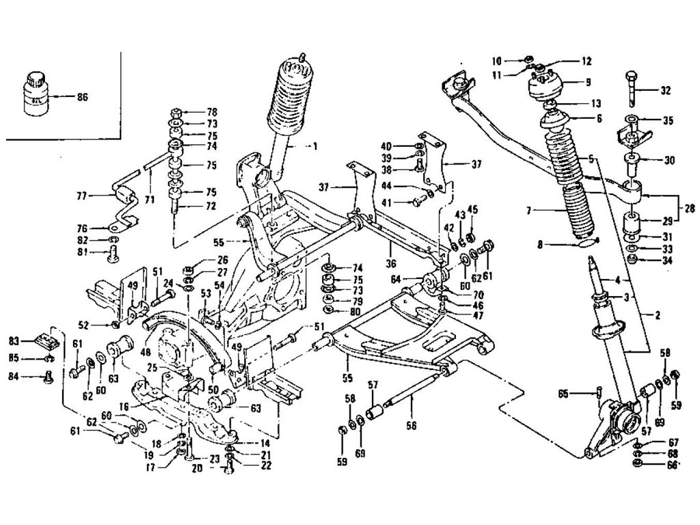

2 / 3

Caption Two
3 / 3

Caption Three

The Nissan S130 is a sports coupé produced by Nissan in Japan from 1978 until 1983. It was sold as the Datsun 280ZX, Nissan Fairlady Z and Nissan Fairlady 280Z, depending on the market. In Japan, it was exclusive to Nissan Bluebird Store locations. It was the second generation Z-car, replacing the Nissan Fairlady Z (S30) in late 1978. The 280ZX was the first time the "by Nissan" subscript was badged alongside the Datsun logo, along with Nissan trucks. The 280ZX was Motor Trend's import car of the year for 1979. The 280ZX was replaced by the Nissan 300ZX in 1984.

The 280ZX adopted suspension similar to that of the concurrent Bluebird 910, with MacPherson struts in front and semi-trailing arm independent suspension in the rear. The wheelbase was up from its predecessor (90.7 in or 2,304 mm) to 91.3 in (2,319 mm) for the two-seater.